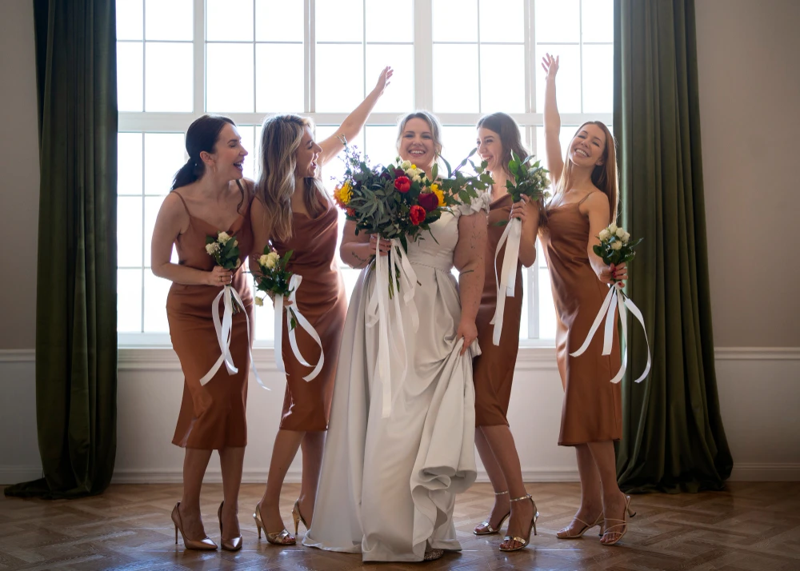

Elegir el vestido para una boda no es sencillo. Hay que considerar el tipo de ceremonia, el horario, el lugar, la paleta de colores del evento y, sobre todo, que el modelo favorezca la silueta de quien lo va a llevar. En este artículo explicamos todo lo que hay que tener en cuenta para elegir un vestido de fiesta para bodas y cómo obtener uno a medida o arreglarlo en Sastrería La Reina, La Reina, Santiago.
Qué considerar antes de elegir el modelo
Antes de decidirse por un modelo de vestido, conviene responder algunas preguntas básicas:
- ¿Es ceremonia de día o de noche? Los vestidos de día pueden ser más livianos, en colores pasteles o neutrales. Los de noche admiten telas más estructuradas, brillos y colores más saturados.
- ¿Es una boda al aire libre o en salón? En exterior, las telas vaporosas funcionan mejor. En salón, hay más libertad de materiales.
- ¿Cuál es el dress code de la invitación? Formal, cocktail, garden party o black tie definen el nivel de elegancia esperado.
- ¿Qué silueta quiero resaltar? El corte del vestido determina cuánto o poco se define la figura.
Siluetas más populares para bodas
- Corte A o evasé: favorece casi todas las siluetas. Se ajusta en la cintura y se abre hacia abajo de forma suave. Muy versátil y cómodo.
- Corte sirena o columna: se ajusta al cuerpo desde el pecho hasta la rodilla y luego se abre levemente. Requiere más holgura en la cadera para moverse bien.
- Corte recto o sheath: una línea recta de arriba a abajo. Moderno y minimalista. Ideal para cuerpos más rectos.
- Vestido midi o asimétrico: con largo hasta la rodilla o la pantorrilla. Más dinámico, apto para bodas de día o garden party.
- Vestido con capa o sobrecapa: muy elegante para bodas formales. La capa puede quitarse para el baile.
Colores recomendados para invitadas a bodas
La norma general es no usar blanco, marfil ni beige muy claro (para no confundirse con la novia) ni negro puro en bodas religiosas o tradicionales. Pero hay muchas opciones:
- Azul marino, pizarra o medianoche: elegante, oscuro sin ser negro. Funciona muy bien de noche.
- Verde botella o esmeralda: uno de los colores más favorecidos en bodas de los últimos años.
- Borgoña o vino tinto: sofisticado para otoño e invierno.
- Polvos, malva o lila: suaves y femeninos, buenos para bodas de primavera o día.
- Dorado o champagne: perfectos para recepciones nocturnas formales.

Telas más usadas en vestidos de fiesta para bodas
- Satén: brillante, fluido y elegante. Muy usado en vestidos de noche y recepciones formales.
- Chiffon o gasa: ligero y transparente. Ideal para capas, mangas o faldas vaporosas en bodas de día.
- Tul: da volumen sin peso. Funciona bien en faldas largas o vestidos de princesa.
- Encaje: clásico y romántico. Se usa en cuerpos, mangas o como capa sobre tela base.
- Jacquard o brocado: tela con textura tejida. Muy elegante para bodas de invierno o ceremonias formales.
- Crepe: cae limpiamente, no se arruga fácil y favorece siluetas estructuradas.
Arreglos de vestidos de fiesta para bodas
Muchas veces el vestido ideal ya existe pero necesita ajustes: acortar el largo, estrechar la cintura, cambiar el escote o añadir tirantes. En Sastrería La Reina realizamos todo tipo de arreglos en vestidos de fiesta para bodas:
- Acortar o alargar el largo (incluyendo colas y capas)
- Ajuste de cintura, busto y cadera
- Cambio o refuerzo de cierre
- Añadir forro interior
- Modificación del escote o espalda
- Reparación de costuras, bordados o adornos
Si tienes un vestido que compraste y no te queda como quieres, tráelo al taller para una evaluación sin costo. También confeccionamos vestidos desde cero en las telas y colores que elijas.
👉 Escríbenos por WhatsApp para coordinar una visita
Ver más en nuestro catálogo de vestidos o en Instagram.
Preguntas frecuentes sobre vestidos de fiesta para bodas
¿Puedo usar negro en una boda?
En bodas civiles y celebraciones modernas el negro es completamente válido. En bodas religiosas tradicionales puede verse demasiado formal o sobrio; en ese caso, un accesorio de color ayuda a suavizarlo.
¿Con cuánto tiempo de anticipación debo encargar el vestido?
Para un vestido confeccionado a medida, se recomienda al menos 3 a 4 semanas de anticipación. Para arreglos simples, entre 5 y 10 días hábiles suele ser suficiente.
¿Cuántas pruebas se hacen para un vestido a medida?
Generalmente dos pruebas: una con el vestido semiterminado para ajustar el molde, y una prueba final antes de la entrega.
¿Puedo traer la tela que yo elija?
Sí. Puedes comprar la tela que prefieras y traerla al taller para la confección. También contamos con muestras de telas disponibles en el taller.
¿Hacen arreglos de urgencia?
Dependiendo del trabajo, sí. Escríbenos por WhatsApp explicando qué necesitas y la fecha del evento para ver si podemos ajustar los tiempos.